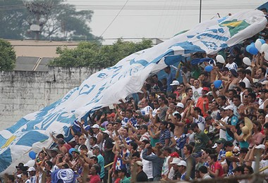

Sociedade Esportiva
Matonense
1976
Hino
Adoro a Matonense!
Adoro a Matonense!
Eu juro eu sou fiel a minha Matonense. (BIS)
Eu amo essa bandeira, não canso de falar.
Matonense tu és grande no esporte igual não há.
Azul e branco são as suas cores
E quem te ama não tem desamores. (BIS)
Adoro a Matonense!
Adoro a Matonense!
Eu juro eu sou fiel a minha Matonense. (BIS)
Eu amo essa bandeira, não canso de falar.
Matonense tu és grande no esporte igual não há.
Azul e branco são as suas cores
E quem te ama não tem desamores. (BIS)
